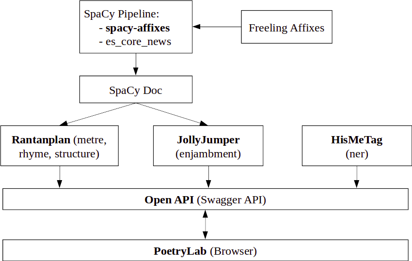
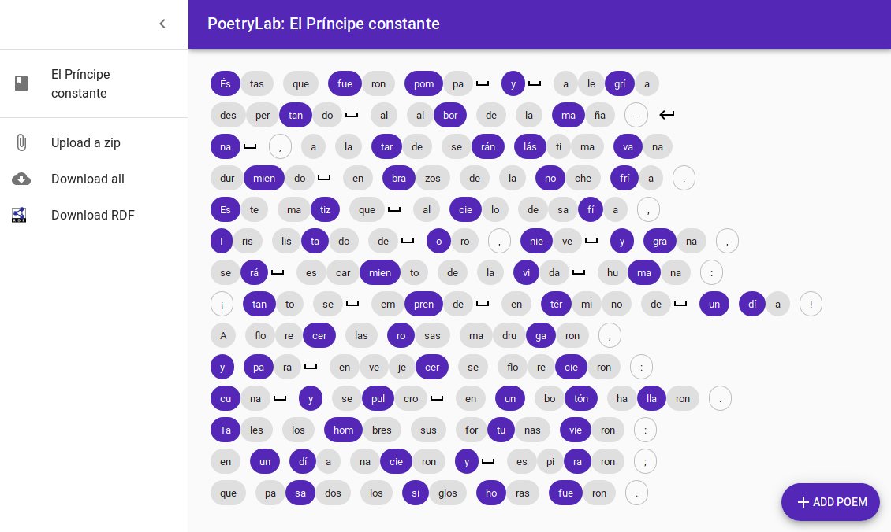

Introduction
The transmission of text in poetic form is a quasi universal aspect in the oral tradition of every culture [1]. The study of the poetic features of text, especially their rhythmic structure when forming verses, pertains to the different traditions, whose scholars established the rules that might govern poetry. Within this context, the POSTDATA Project [2] formalized a network of ontologies able to express any poetic expression and its analysis at the European level, enabling scholars all over Europe to interchange their data using Linked Open Data. However, varied research interests result in corpora that might not share the same facets of an analysis. To alleviate this concern and foster the completeness of the interchanged corpora, our team set out to build a software toolkit to assist in the analysis of poetry. This paper introduces PoetryLab, an extensible open source toolkit for syllabification, scansion (extraction of stress patterns), enjambment detection (syntactical units split in two lines), rhyme detection, and historical named entity recognition for Spanish poetry. Our toolkit achieves state of the art performance in the tasks for which reproducible alternatives exist.
Design Principles
Manuals for metrical analysis of Spanish poetry exist at least since the 18th Century [6], although the foundational work and subsequent refined guides for modern analysis would take another century to appear (see, e.g., [3, 4, 5]). Despite such a long and rich tradition, not many computational tools have been created to assist scholars in the annotation and analysis of Spanish poetry. With ever increasing corpora sizes and the popularization of distant reading techniques, the possibility of automating part of the analysis became very appealing. Although solutions exist, they are either incomplete (i.e., fixed-metre poetry, mostly hendecasyllables [7, 8, 9, 10]), not applicable to Spanish [7, 12], or not open nor reproducible [8]. These limitations guided the design of PoetryLab. At its core (see Figure 1), PoetryLab provides a compliant OpenAPI [15] that connects independent packages together. Built on top of the natural language processing framework spaCy [16], two Python packages perform scansion and enjambment detection, namely, Rantanplan [26] and JollyJumper.1 In Spanish, some words are stressed depending on their function in the sentence, hence the need for a proper part of speech (PoS) tagger. AnCora [19], the corpus spaCy is trained on for PoS tagging of Spanish texts, splits most affixes thus causing some failures in the tags it assigns. To circumvent this limitation and to ensure clitics were handled properly, we integrated Freeling’s affixes rules via a custom built pipeline for spaCy. The resulting package, spacy-affixes,2 splits words with affixes before assigning PoS [20], and can be plugged in to a regular spaCy pipeline loading one of the statistical models for Spanish. This pipeline is the foundation for Rantanplan and JollyJumper, which are rule-based algorithms inspired by Ríos Mestre [25], Caparrós [5] and Navarro Tomás [24], and Quilis [22] and Spang [23], respectively.

Figure 1. General architecture of PoetryLab.
Following the OpenAPI specification, we defined a REST API that unified the internal interface of the different packages and provided a common endpoint for analysis.3 For external packages developed in languages other than Python, PoetryLab provides a pluggable architecture that allows their integration. This is the case for our named entity recognition system, HisMeTag [17], developed in Java and connected to the PoetryLab API through an internal REST API. The only requirement for third-party integrations is to consume text and produce both JSON and RDF triples.
The PoetryLab API was then used to provide with functionality a React-based web interface that non-technical scholars can use to interact with the packages in a graphical way (see Figure 2). The frontend also allows downloading the generated data.

Figure 2. PoetryLab showing stressed syllables (blue), sinalefas (‿) and enjambments (↵).
Results
One notably difficult aspect of benchmarking automated analysis of Spanish poetry is the lack of a gold standard reference corpus. For the evaluation of the syllabification algorithm in PoetryLab we build a 100k words corpus using a combination of online resources,4 which we named EDFU and are releasing under a Creative Commons license.5 For metrical analysis we used Navarro-Colorado’s corpus [21]. For mixed-metre we are using our own copus obtained from Carjaval’s annotated anthology [11].6 Unfortunately, we have not found a public corpus for rhyme and stanza identification yet, and although an enjambment corpus seems to exist [18], it is not publicly available.
Table 1 shows the ratio of success extracting the list of syllables of the words in EDFU, and the correct metrical analysis for the different corpora and tools. Notably, PoetryLab achieves state of the art performance for syllabification and per line metrical analysis.7 We were unable to reproduce Gervás’ approach and are reporting their own ratios.
Syllabification (EDFU)
Metrical patterns (fixed-metre)
Metrical pattern (mixed-metre)
Table 1. Summary of results of PoetryLab performance.
Discussion
Although at an early stage, PoetryLab has proven useful in that it highlights some issues with the existing corpora and techniques developed to this day. First, there was no alternative system to analyze poetry composed of other than hendecasyllables, for which we are using a corpus of mixed-metre poetry based on Carvajal’s original annotations. Moreover, we are contributing with a new corpora to evaluate syllabification procedures, and enriching the ecosystem of Python tools for Spanish by providing a spaCy pipeline that deals with clitics. Finally, we make the data produced by the PoetryLab machine readable, interoperable, and ready to be ingested into a triple store compliant with the POSTDATA Project network of ontologies.
Eventually, PoetryLab will be integrated into the larger POSTDATA Project public website, making working with European repositories of poetry a more pleasant task, and assisting whenever possible with the metrical and rhetorical side of the analysis.
Founding Source
Research for this paper has been achieved thanks to the Starting Grant research project Poetry Standardization and Linked Open Data: POSTDATA (ERC-2015-STG-679528) obtained by Elena González-Blanco. This project is funded by the European Research Council (https://erc.europa.eu) (ERC) under the research and innovation program Horizon2020 of the European Union.
Notes
Tables for this paper were created using the next Notebook: https://github.com/linhd-postdata/poetrylab-dh2020
Bibliography
[1] Francis, Norbert. Bilingual and Multicultural Perspectives on Poetry, Music, and Narrative: The Science of Art. Lexington Books, 2017.
[2] Poetry Standardization and Linked Open Data (POSTDATA) Project. European Research Council (ERC) under the European Union’s Horizon 2020 Research and Innovation Programme (ERC-2015-STG-679528). http://postdata.linhd.uned.es/ Accessed October 15th, 2019.
[3] Navarro Tomás, Tomás. "Métrica española." Reseña histórica y descriptiva 50. Madrid (1991).
[4] Bello, Andrés. Principios de la ortología y métrica de la lengua castellana, Santiago de Chile, Imprenta de La Opinión, 1835.
[5] Domínguez Caparrós, José. "Métrica española." Madrid, Síntesis (2014).
[6] Caparrós, José Domínguez. Contribución a la historia de las teorías métricas en los siglos XVIII y XIX. Vol. 92. Editorial CSIC-CSIC Press, 1975.
[7] Agirrezabal, Manex, et al. "ZeuScansion: a tool for scansion of English poetry." Journal of Language Modelling 4 (2016).
[8] Navarro-Colorado, Borja. "A metrical scansion system for fixed-metre Spanish poetry." Digital Scholarship in the Humanities 33.1 (2017): 112-127.
[9] Gervás, Pablo. "A logic programming application for the analysis of Spanish verse." International Conference on Computational Logic. Springer, Berlin, Heidelberg, 2000.
[10] Agirrezabal, Manex, Iñaki Alegria, and Mans Hulden. "A Comparison of Feature-Based and Neural Scansion of Poetry." arXiv preprint arXiv:1711.00938 (2017).
[11] Fernández-Carvajal, Francisco. "Antología de textos." Palabra (2003).
[12] Hartman, Charles O. (2005). The Scandroid 1.1.
[13] Ruiz Fabo, Pablo, et al. "The Diachronic Spanish Sonnet Corpus (DISCO): TEI and Linked Open Data Encoding, Data Distribution and Metrical Findings." (2018).
[14] Fischer, Frank, Peer Trilcke, and Boris Orekhov. (2019). Drama Corpora Project (DraCor). https://dracor.org/ Accessed October 15th, 2019.
[15] OpenAPI Specification Version 3.0.2. https://swagger.io/specification/ Accessed October 15th, 2019.
[16] Matthew Honnibal and Ines Montani. 2018. spaCy 2: Natural language understanding with Bloom embeddings,convolutional neural networks and incremental parsing. To appear.
[17] Díez Platas, María Luisa, et al. "Hispanic Medieval Tagger (HisMeTag): una aplicación web para el etiquetado de entidades en textos medievales." Presented at Humanidades Digitales Hispánicas 2017, Málaga, Spain.
[18] Fabo, Pablo Ruiz, Clara Martínez Cantón, and Thierry Poibeau. "Distant Rhythm: Automatic Enjambment Detection on Four Centuries of Spanish Sonnets." Digital Humanities 2017. Mexico City, Mexico.
[19] Taulé, Mariona, Maria Antònia Martí, and Marta Recasens. "AnCora: Multilevel Annotated Corpora for Catalan and Spanish." Lrec. 2008.
[20] Padró, Lluís, and Evgeny Stanilovsky. "Freeling 3.0: Towards wider multilinguality." LREC2012. 2012.
[21] Navarro-Colorado, Borja, María Ribes Lafoz and Noelia Sánchez (2016) “Metrical annotation of a large corpus of Spanish sonnets: representation, scansion and evaluation”, Proceedings of the 10th edition of the Language Resources and Evaluation Conference, 23-28 May 2016, Portorož (Slovenia).
[22] Quilis, Antonio. Estructura del encabalgamiento en la métrica española. Consejo Superior de Investigaciones Científicas, patronato Menéndez y Pelayo, Instituto Miguel de Cervantes. 1964.
[23] Spang, Kurt. Ritmo y versificación: teoría y práctica del análisis métrico y rítmico. Editum, 1983.
[24] Navarro Tomás, Tomás. "Métrica española." Reseña histórica y descriptiva 50 (1991).
[25] Mestre, Antonio Ríos. La transcripcion fonetica automatica del diccionario electronico de formas simples flexivas del español: un estudio fonologico en el lexico. Diss. Universitat Autònoma de Barcelona, 1998.
[26] De la Rosa, Javier, Álvaro Pérez, Salvador Ros, Elena González-Blanco. "Fast and Accurate Syllabification and Scansion of Spanish Poetry." Journal Procesamiento del Lenguaje Natural, 65, 2020.